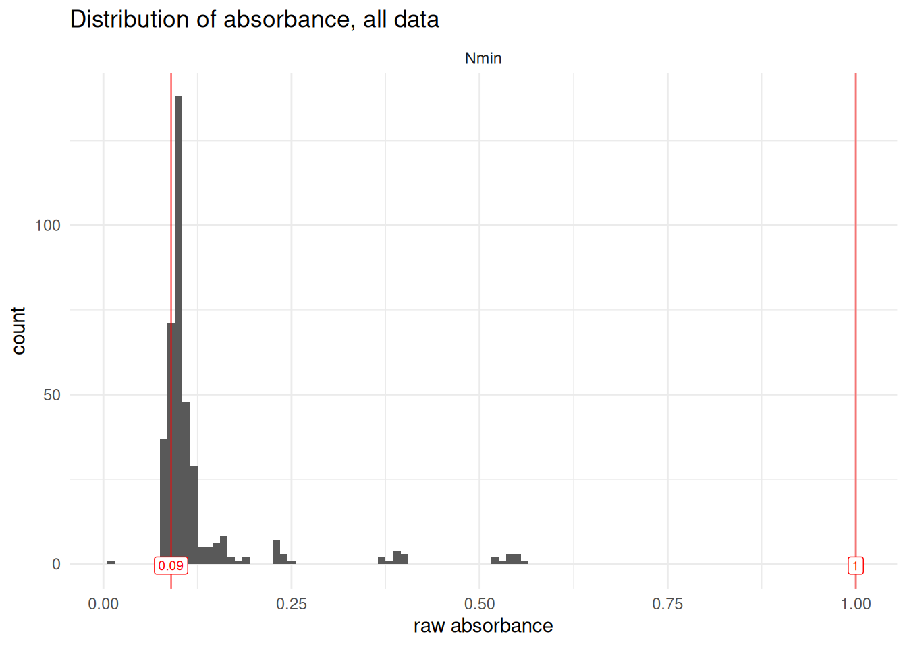

Work in progress
This vignette is still under development, bugs are to be expected
TO DO
- Add reference to outlier steps for Std blank, std curve and extr blank
Introduction
This vignette introduces the handling of several functions to help deal with outliers, at several steps of the data transformation pipeline.
remove_wells()allows an easy filtering out of outlier wells from atidy_plate.failed_wells_template()creates a template of failed wells to be manually filled, e.g., in the lab while conducting experimentsqc_raw_abs()helps in the identification of wells that recorded suspicious absorbance readings (outside of an expected range)Additional functions are introduced in vignettes
blank-correctionandabs-to-conc
1 - Manual removal of single wells
It is not unusual to have to manually remove wells from a data set. This is often due to pipetting errors, whether we know that we failed a well in the lab, or we identify aberrant values during data processing (see also vignette xx - upcoming for how to identify such wells). remove_wells() does just that.
According to the logic of this package, 3 pieces of information uniquely define a well: dataset, plate_id and well_id. The function remove_wells() allows manual removal of wells from a table formatted as tidy_table, taking a small tibble such as failed_wells_example to decide which wells to remove.
First, let’s check out the input data: a tidy_table with 960 rows and a small table referring to failed wells with 2 rows.
# check out input
tidy_table ; failed_wells_example
#> # A tibble: 960 × 8
#> row column well_id plate_id unique_well_id dataset map abs
#> <chr> <chr> <chr> <chr> <chr> <chr> <chr> <chr>
#> 1 A 1 A1 M12 A1_M12 expe1 Std0001 1.4402
#> 2 A 1 A1 M16 A1_M16 expe1 Std0097 1.5789
#> 3 A 1 A1 M17 A1_M17 expe1 Std0193 1.5611
#> 4 A 1 A1 M18 A1_M18 expe1 Std0289 1.7013
#> 5 A 1 A1 M19 A1_M19 expe1 Std0385 1.6865
#> 6 A 1 A1 M20 A1_M20 expe1 Std0481 1.7936
#> 7 A 1 A1 M21 A1_M21 expe1 Std0577 1.7925
#> 8 A 1 A1 M22 A1_M22 expe1 Std0673 1.8274
#> 9 A 1 A1 M23 A1_M23 expe1 Std0769 1.9330
#> 10 A 1 A1 M1 A1_M1 expe1 Std0865 0.9254
#> # ℹ 950 more rows
#> # A tibble: 2 × 3
#> dataset plate_id well_id
#> <chr> <chr> <chr>
#> 1 expe1 M16 A1
#> 2 expe1 M23 H12Here is how to use the function remove_wells(). Notice that clean_table has 958 rows, i.e., 2 rows less than the 960 of tidy_table.
# remove wells
(clean_table <- tidy_table |> remove_wells(failed_wells_example))
#> # A tibble: 958 × 8
#> row column well_id plate_id unique_well_id dataset map abs
#> <chr> <chr> <chr> <chr> <chr> <chr> <chr> <chr>
#> 1 A 1 A1 M12 A1_M12 expe1 Std0001 1.4402
#> 2 A 1 A1 M17 A1_M17 expe1 Std0193 1.5611
#> 3 A 1 A1 M18 A1_M18 expe1 Std0289 1.7013
#> 4 A 1 A1 M19 A1_M19 expe1 Std0385 1.6865
#> 5 A 1 A1 M20 A1_M20 expe1 Std0481 1.7936
#> 6 A 1 A1 M21 A1_M21 expe1 Std0577 1.7925
#> 7 A 1 A1 M22 A1_M22 expe1 Std0673 1.8274
#> 8 A 1 A1 M23 A1_M23 expe1 Std0769 1.9330
#> 9 A 1 A1 M1 A1_M1 expe1 Std0865 0.9254
#> 10 A 2 A2 M12 A2_M12 expe1 Std0002 1.4802
#> # ℹ 948 more rows
# check how many rows were removed
tidy_table |> nrow() ; failed_wells_example |> nrow() ; clean_table |> nrow()
#> [1] 960
#> [1] 2
#> [1] 958Note that remove_wells() requires the columns dataset, plate_id and well_id in both input tables, but they may contain other columns as well.
2 - Defining wells to remove
In vignettes blank-correction and abs-to-conc, we go in detail into how to identify potential outliers wells at various stages of the analytic pipeline. failed_wells_example has a very simple structure that can easily be created either in R or imported from a csv file.
2.1 - From a csv
It can he handy to have a printed table in the lab, to quickly fill in by hand the information on wells where we know that something went wrong. For this, the function failed_wells_template() quickly generates a table that can be exported as a csv, printed, then manually encoded and imported back into R. By default, it will generate a csv with 30 rows.
(failed_wells_template <- failed_wells_template(nrow = 30))
#> # A tibble: 30 × 3
#> dataset plate_id well_id
#> <chr> <chr> <chr>
#> 1 "" "" ""
#> 2 "" "" ""
#> 3 "" "" ""
#> 4 "" "" ""
#> 5 "" "" ""
#> 6 "" "" ""
#> 7 "" "" ""
#> 8 "" "" ""
#> 9 "" "" ""
#> 10 "" "" ""
#> # ℹ 20 more rowsExporting as a csv can be done with
failed_wells_template |> readr::write_csv("path/to/folder/failed_wells_template.csv")
Importing it back can be done with
readr::read_csv("path/to/folder/failed_wells_lab.csv")
2.2 - Manually in R
Option 1: use dplyr::filter() to extract failed_wells from an existing table.
The use of dplyr::select() is optional and only allows a cleaner table for the purpose of this vignette. remove_wells() works regardless.
failed_wells <- tidy_table |>
dplyr::select(dataset, plate_id, well_id) |>
dplyr::filter(
dataset == "expe1" &
((plate_id == "M16" & well_id == "A1") |
(plate_id == "M23" & well_id == "H12"))
)
# check it out
failed_wells
#> # A tibble: 2 × 3
#> dataset plate_id well_id
#> <chr> <chr> <chr>
#> 1 expe1 M16 A1
#> 2 expe1 M23 H12Notice that applying remove_wells() to tidy_table from this table of failed_wells results in the same as just filtering out those wells. So simply using dplyr::filter_out() may be more efficient in this case:
tidy_table |> remove_wells(failed_wells)
#> # A tibble: 958 × 8
#> row column well_id plate_id unique_well_id dataset map abs
#> <chr> <chr> <chr> <chr> <chr> <chr> <chr> <chr>
#> 1 A 1 A1 M12 A1_M12 expe1 Std0001 1.4402
#> 2 A 1 A1 M17 A1_M17 expe1 Std0193 1.5611
#> 3 A 1 A1 M18 A1_M18 expe1 Std0289 1.7013
#> 4 A 1 A1 M19 A1_M19 expe1 Std0385 1.6865
#> 5 A 1 A1 M20 A1_M20 expe1 Std0481 1.7936
#> 6 A 1 A1 M21 A1_M21 expe1 Std0577 1.7925
#> 7 A 1 A1 M22 A1_M22 expe1 Std0673 1.8274
#> 8 A 1 A1 M23 A1_M23 expe1 Std0769 1.9330
#> 9 A 1 A1 M1 A1_M1 expe1 Std0865 0.9254
#> 10 A 2 A2 M12 A2_M12 expe1 Std0002 1.4802
#> # ℹ 948 more rows
tidy_table |> dplyr::filter_out(
dataset == "expe1" &
((plate_id == "M16" & well_id == "A1") |
(plate_id == "M23" & well_id == "H12"))
)
#> # A tibble: 958 × 8
#> row column well_id plate_id unique_well_id dataset map abs
#> <chr> <chr> <chr> <chr> <chr> <chr> <chr> <chr>
#> 1 A 1 A1 M12 A1_M12 expe1 Std0001 1.4402
#> 2 A 1 A1 M17 A1_M17 expe1 Std0193 1.5611
#> 3 A 1 A1 M18 A1_M18 expe1 Std0289 1.7013
#> 4 A 1 A1 M19 A1_M19 expe1 Std0385 1.6865
#> 5 A 1 A1 M20 A1_M20 expe1 Std0481 1.7936
#> 6 A 1 A1 M21 A1_M21 expe1 Std0577 1.7925
#> 7 A 1 A1 M22 A1_M22 expe1 Std0673 1.8274
#> 8 A 1 A1 M23 A1_M23 expe1 Std0769 1.9330
#> 9 A 1 A1 M1 A1_M1 expe1 Std0865 0.9254
#> 10 A 2 A2 M12 A2_M12 expe1 Std0002 1.4802
#> # ℹ 948 more rowsOption 2: Encode it manually from scratch, using tibble::tibble(). This can be more efficient for a handful of wells to remove, but it easily becomes a source of errors with numerous outlier wells because row-correspondence between dataset, plate_id and well_id is not easily followed visually.
3 - Quality Check of raw absorbance readings
There is a range of values that are deemed acceptable for absorbance readings. Whereas there is a long-lasting tradition of setting “acceptable” absorbance values between 0.1 and 1, in reality, the acceptable range will depend on experiment, usage and quality of the spectrophotomer. Note that for N dosage, values lower than 0.1 are not rare, especially for blanks and lower values in the standard curve.
qc_raw_abs() checks raw absorbance values in a dataset and returns a table allowing the identification of suspicious wells.
By default, qc_raw_abs() also draws a plot of the distribution of raw absorbance values in the data set, and sends either a message (all is well) or a warning (some wells are out of range). These outputs can be repressed. See ?qc_raw_abs() for more details.
Default range of accepted absorbance is [0.1, 1], but it can be modulated with the arguments min_abs and max_abs.
# check out the raw table
tidy_plates
#> # A tibble: 480 × 8
#> row column well_id unique_well_id dataset plate_id map abs
#> <chr> <chr> <chr> <chr> <chr> <chr> <chr> <chr>
#> 1 A 1 A1 A1_NO3_1F1 Nmin NO3_1F1 Std 0.092
#> 2 A 1 A1 A1_NO3_1F2 Nmin NO3_1F2 Std 0.091
#> 3 A 1 A1 A1_NO3_1F3 Nmin NO3_1F3 Std 0.110
#> 4 A 1 A1 A1_NO3_1F4 Nmin NO3_1F4 Std 0.092
#> 5 A 1 A1 A1_NO3_1F5 Nmin NO3_1F5 Std 0.113
#> 6 A 2 A2 A2_NO3_1F1 Nmin NO3_1F1 81_t1_z2 0.114
#> 7 A 2 A2 A2_NO3_1F2 Nmin NO3_1F2 97_t1_z1 0.107
#> 8 A 2 A2 A2_NO3_1F3 Nmin NO3_1F3 89_t1_z3 0.095
#> 9 A 2 A2 A2_NO3_1F4 Nmin NO3_1F4 81_t1_z1 0.118
#> 10 A 2 A2 A2_NO3_1F5 Nmin NO3_1F5 Std_3_t1 0.167
#> # ℹ 470 more rows
# run the function
(suspicious_wells <- qc_raw_abs(tidy_plates, min_abs = 0.09, max_abs = 1))
#> Warning in qc_raw_abs(tidy_plates, min_abs = 0.09, max_abs = 1): 46 wells out of 384 are out of range for absorbance, i.e., not in the set boundaries of [0.09; 1].
#> See table to identify suspicious wells.
#> # A tibble: 46 × 5
#> dataset plate_id well_id map abs
#> <chr> <chr> <chr> <chr> <chr>
#> 1 Nmin NO3_1F1 A8 extr 0.083
#> 2 Nmin NO3_1F2 A8 extr 0.083
#> 3 Nmin NO3_1F3 A8 extr 0.084
#> 4 Nmin NO3_1F4 A8 extr 0.084
#> 5 Nmin NO3_1F5 A8 extr 0.084
#> 6 Nmin NO3_1F3 B2 89_t1_z3 0.085
#> 7 Nmin NO3_1F1 B8 extr 0.083
#> 8 Nmin NO3_1F2 B8 extr 0.082
#> 9 Nmin NO3_1F3 B8 extr 0.085
#> 10 Nmin NO3_1F4 B8 extr 0.084
#> # ℹ 36 more rowsIt can happen that some wells are very striking, e.g., a single well with an absorbance of 3 where the rest of the dataset is around 1 and the experiment has been ran in 4 technical replicates (there should always be 4 wells for each value). In such cases, the output of qc_raw_abs() can be used in combination with remove_wells(), possibly with additional selection and filtering steps as shown above.
tidy_plates |> remove_wells(suspicious_wells)
#> # A tibble: 434 × 8
#> row column well_id unique_well_id dataset plate_id map abs
#> <chr> <chr> <chr> <chr> <chr> <chr> <chr> <chr>
#> 1 A 1 A1 A1_NO3_1F1 Nmin NO3_1F1 Std 0.092
#> 2 A 1 A1 A1_NO3_1F2 Nmin NO3_1F2 Std 0.091
#> 3 A 1 A1 A1_NO3_1F3 Nmin NO3_1F3 Std 0.110
#> 4 A 1 A1 A1_NO3_1F4 Nmin NO3_1F4 Std 0.092
#> 5 A 1 A1 A1_NO3_1F5 Nmin NO3_1F5 Std 0.113
#> 6 A 2 A2 A2_NO3_1F1 Nmin NO3_1F1 81_t1_z2 0.114
#> 7 A 2 A2 A2_NO3_1F2 Nmin NO3_1F2 97_t1_z1 0.107
#> 8 A 2 A2 A2_NO3_1F3 Nmin NO3_1F3 89_t1_z3 0.095
#> 9 A 2 A2 A2_NO3_1F4 Nmin NO3_1F4 81_t1_z1 0.118
#> 10 A 2 A2 A2_NO3_1F5 Nmin NO3_1F5 Std_3_t1 0.167
#> # ℹ 424 more rows4 - When to remove outliers?
From the end of the import-tidy vignette until linear model application, tables are in the same “tidy” format, with one row per well and one column for absorbance (blank-corrected or raw), like this:
tidy_table
#> # A tibble: 960 × 8
#> row column well_id plate_id unique_well_id dataset map abs
#> <chr> <chr> <chr> <chr> <chr> <chr> <chr> <chr>
#> 1 A 1 A1 M12 A1_M12 expe1 Std0001 1.4402
#> 2 A 1 A1 M16 A1_M16 expe1 Std0097 1.5789
#> 3 A 1 A1 M17 A1_M17 expe1 Std0193 1.5611
#> 4 A 1 A1 M18 A1_M18 expe1 Std0289 1.7013
#> 5 A 1 A1 M19 A1_M19 expe1 Std0385 1.6865
#> 6 A 1 A1 M20 A1_M20 expe1 Std0481 1.7936
#> 7 A 1 A1 M21 A1_M21 expe1 Std0577 1.7925
#> 8 A 1 A1 M22 A1_M22 expe1 Std0673 1.8274
#> 9 A 1 A1 M23 A1_M23 expe1 Std0769 1.9330
#> 10 A 1 A1 M1 A1_M1 expe1 Std0865 0.9254
#> # ℹ 950 more rowsMain steps of the pipeline are: blank-correction of standard curves, blank-correction of sample data, computation of the linear or polynomial model, and inference of sample concentration. remove_wells() can be applied at any of those steps. So when is it important to perform outlier removal?
We find it a good practice to check for outliers directly before any aggregation of data, which needs to be computed on wells that we trust, so that we can also trust the aggregated value that is computed. Key moments that should be preceded by an outlier removal step are thus
-
any average of several wells:
standard blank (when there are several standard curves per plate)
sample blank (extractant)
triplicate or n-replicates of sample wells (under development)
computation of the model parameters (e.g., slope and intercept for the linear model)
5 - Next steps
if you already have tidy imported data as produced by import-tidy, move on to blank-correction.